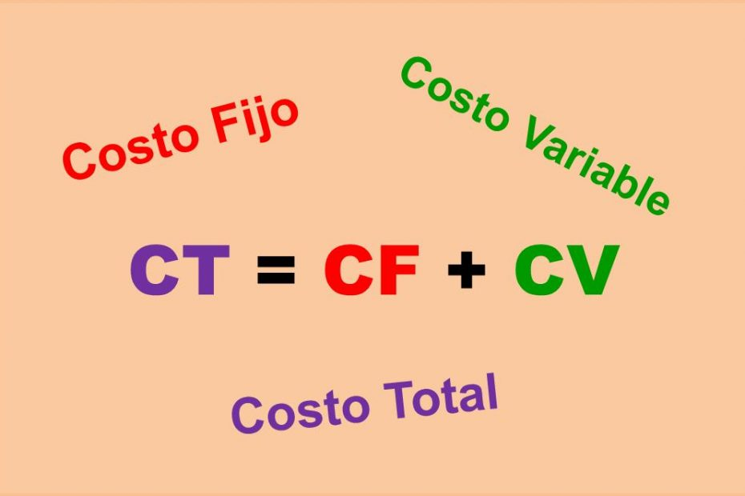
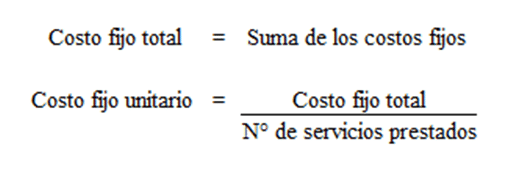

Costos Fijos Totales (CFT)
Los costos fijos totales son los gastos en los que incurre una empresa en un período determinado, independientemente de la cantidad de productos o servicios que produzca o venda. Estos costos no varían con la cantidad de producción o ventas, y se mantienen constantes durante un período determinado.
Ejemplos de costos fijos totales:
Alquiler de la fábrica o local comercial
Salarios de los empleados administrativos
Seguros
Depreciación de activos fijos
Gastos de mantenimiento
Costo Variable Unitario (CVU)
El costo variable unitario es el costo adicional en el que se incurre por producir una unidad adicional de un producto o servicio. Este costo varía directamente con la cantidad de producción o ventas.
Ejemplos de costos variables unitarios:
Costo de materias primas por unidad
Costo de mano de obra directa por unidad
Costo de energía y combustible por unidad
CALCULADORA DE COSTO TOTAL
Resultados:
Costo Fijo Unitario: $0.00
Costo Variable Total: $0.00
Costo Total: $0.00